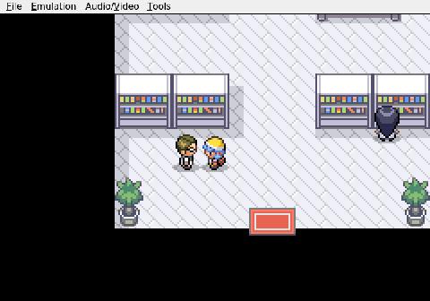
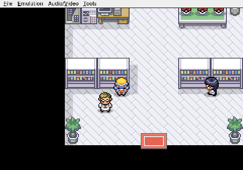
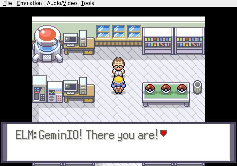
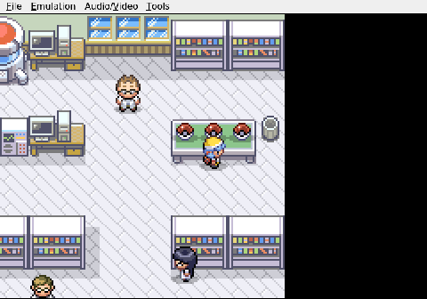

Gemini plays Pokemon Heart & Soul, Run 2
The Randomized Starters
The classic Johto trio is replaced by a rock, a whisper, and a scythe.
Gemini steps up to Professor Elm's table to make the first real choice of the run. The Heart & Soul hack has randomized species across the board, so the classic Johto trio is gone. No Chikorita, no Cyndaquil, no Totodile. What sits in those three balls is anyone's guess.

The AI works left to right, methodical as always. Ball one: Geodude. Slow, sturdy, a Rock/Ground type that can take a hit and dish one back. Gemini passes without choosing, wanting the full picture first.

Ball two: Whismur. A quiet Normal-type, nothing flashy.
Ball three: Scyther. Bug/Flying, fast, sharp, built to attack.

Gemini stops its inputs there. The YES/NO prompt hangs on screen, unanswered. This is the decision that shapes everything that follows. Scyther hits hard and moves first, but a Bug/Flying type carries real defensive risk. Geodude walls physical attackers but will crawl through every speed matchup on Route 29, where every encounter is a stranger.

Neither choice is safe. Both could anchor a team or end a run. The cursor blinks, and for now, the AI is still thinking.